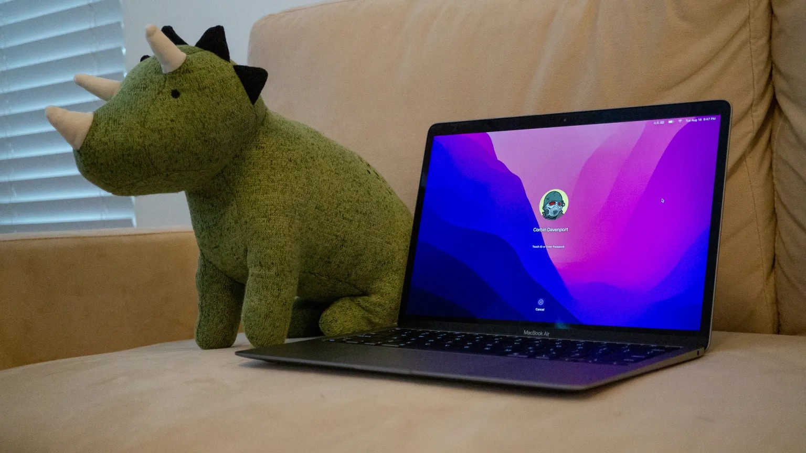
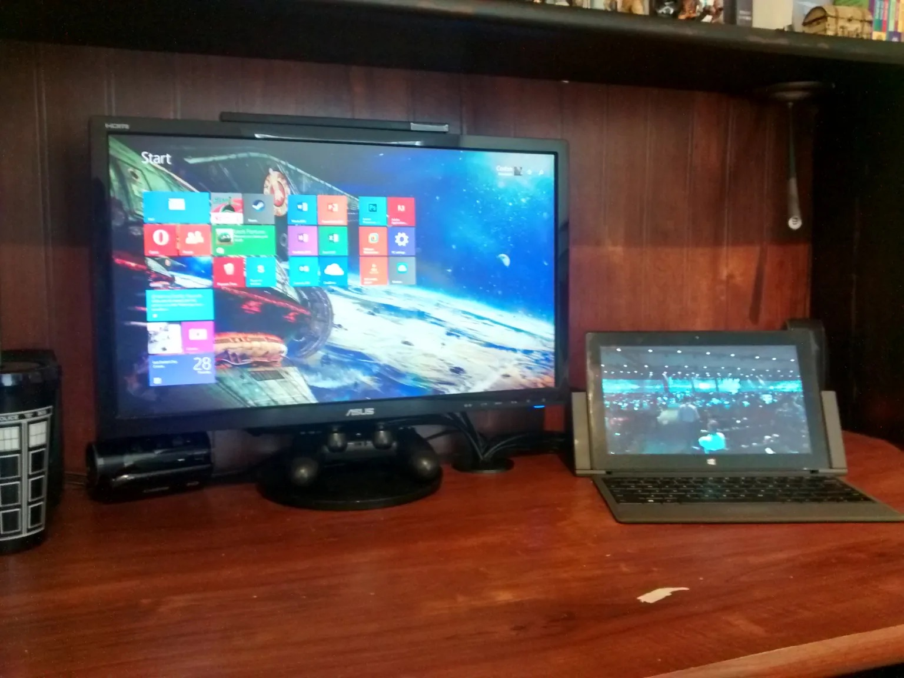
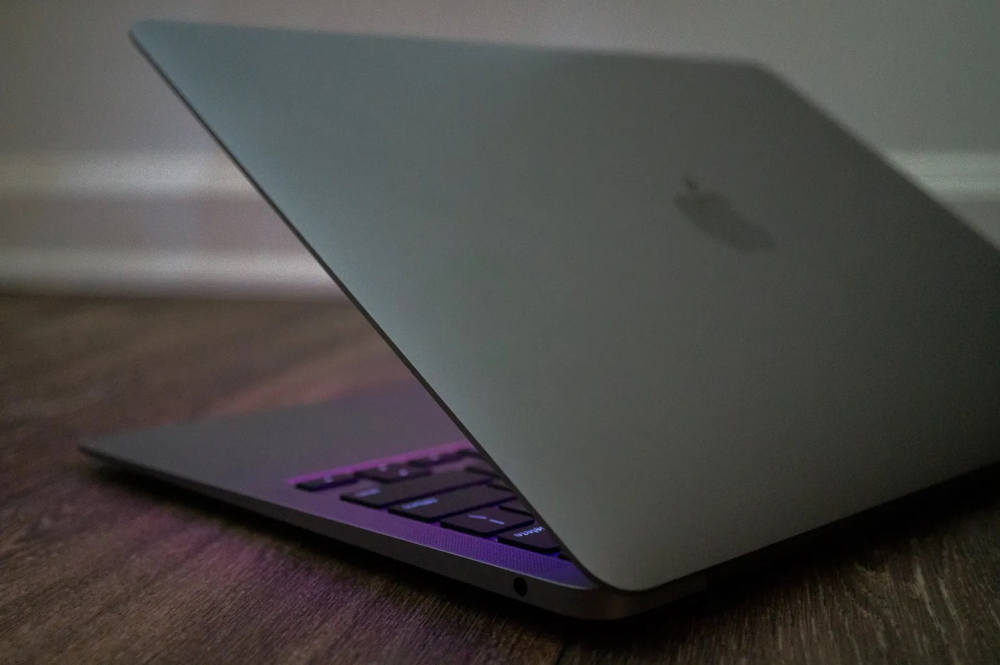
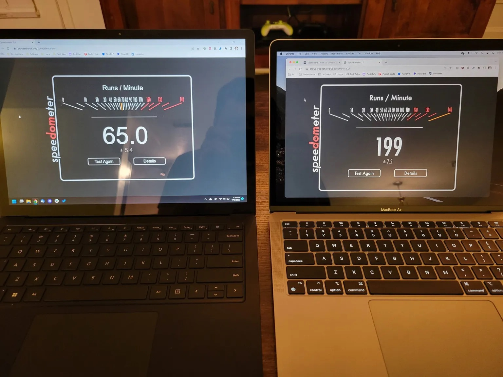
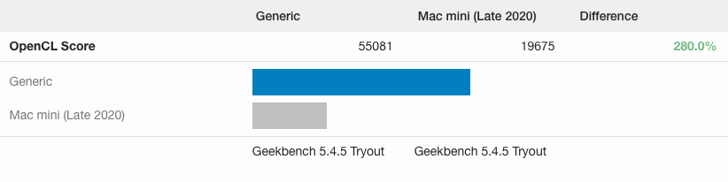

I grew up around Mac computers and other Apple products, culminating in a late-2012 Mac Mini that I received around the time I started high school. I haven’t really looked back, but in the past month, Apple has won me back.
That late-2012 Mac Mini was a great computer when I first set it up, sometime in 2013 (judging by my Google Photos archives). Before then, I was splitting up my schoolwork, gaming, and personal projects across a multitude of hand-me-down and low-end PCs — my mom’s MacBook Pro, a dying iMac G5, my trusty Eee PC netbook, and an old PC tower, to name a few.
The Mac Mini was the first computer I had entirely to myself that could do everything I wanted out of a computer. It was reasonably fast, and had far more software available than the PowerPC-based Macs I was using before. I could work on my Chrome extensions (Chrome was never available on PowerPC Mac), and I played games like Civilization V and Team Fortress 2.
However, as newer releases of Mac OS X (now macOS) arrived, my Mac Mini became slower and slower. I assume Apple wasn’t optimizing OS X for spinning mechanical hard drives anymore, and the laptop-grade Core i5-3210M processor wasn’t helping.
At some point, I decided to install Windows 7 on a partition using Apple’s Boot Camp, which turned out to be much faster than OS X. Not only that, but I could play more games on Windows than Mac, and they usually ran better! Specifically, I remember Team Fortress 2 occasionally freezing on OS X, but running perfectly on Windows.
My increasing use of Windows culminated in purchasing a used Surface Pro 2 in 2015. It was faster on paper than my Mac Mini, and it could function as a tablet, laptop (with the keyboard attachment), or desktop (with the dock). In hindsight, it wasn’t particularly good at any of those form factors — it had worse battery life and a heavier build than most tablets, the keyboard cover wasn’t great, and most desktops would be better than the docked mode. But just like many people in the mid-2010s, I was a sucker for the concept of a one-size-fits-all PC.

The Surface Pro mostly replaced the Mac Mini, which was eventually relegated to Plex server duty. After that point, I stuck to using PCs, either using Windows or some variant of desktop Linux. My setup for the past few years has been desktop Linux for productivity work, and a Windows partition or drive for gaming — with various Chromebooks and Android tablets thrown in the mix.
That continued all the way until now, in the middle of 2022.
Email and calendar are crucial for my job. I’m currently the News Editor at How-To Geek, which means I get emails about embargoed information, clarifications from companies and readers, and other messages that ideally need to be answered (or at least read) as soon as possible. There’s also a shared work Google Calendar with events and various reminders. Besides that, I also use email and calendar for my own personal projects and communication.
I have two Google accounts, one personal and one provided by my job. I need easy access to both email inboxes, all my calendars from both accounts should be in one view, and I need push notifications. That’s something my Android phones and tablets can handle without a problem (even when using Samsung’s calendar app instead of Google Calendar), and last time I tried a similar setup with Gnome-based desktop Linux distributions it worked there too. Not Windows 10, though!
Microsoft’s built-in Mail and Calendar apps do support Google accounts, but they have not been substantially updated since the early days of Windows 10, and I’ve noticed push notifications for mail don’t really work on Windows 11. The traditional Microsoft Outlook application doesn’t officially support Google Calendar at all. The web versions of Gmail and Google Calendar are decent, but accounts are completely isolated — they have to be reloaded when switching accounts, and I can’t see a calendar view with everything from both accounts. Microsoft’s Outlook.com can import and manage multiple Google accounts, but it doesn’t have a unified view either.
There are some other web wrappers that might have done the job, but I don’t want a web wrapper. Mozilla Thunderbird was the ultimately best solution I found on Windows, even though it’s an open-source project funded almost entirely by user donations. However, it doesn’t handle calendars shared from other Google accounts well, and I noticed the app was sending duplicate notifications for some messages.
There were a bunch of other minor issues I was running into on Windows 11, but email and calendar were the main problems. I still need access to Adobe Photoshop and Lightroom, so full-time Linux isn’t an option (fuck you, Adobe), which just leaves buying a Mac.
I bought a MacBook Air in July — specifically, the M1 Air with 8 GB RAM and 512 GB storage. That was around the time Apple started shipping the new M2-based Air, but it would have been hundreds of dollars more expensive, and I was fairly sure my usual laptop workload could be handled by the M1 chip.

First, macOS is really nice. There’s a cohesive visual design across most of the operating system, which Microsoft is slowly attempting to address with Windows 11. The notification panel is also much better than on Windows or most Linux distributions, with proper support for stacking and the option to add widgets.
I tried setting up all my Google accounts and using them with Apple’s built-in Mail and Calendar, and sure enough, they worked perfectly. I have some minor gripes with both applications, so I might try some alternative apps that aren’t available on other platforms, but having reliable notifications and not waiting for web apps to load is already saving me from periodic headaches.
The benefit to joining the Apple Silicon party two years later is that nearly all popular software is now compiled natively for the M1 chip, instead of running in Apple’s Rosetta compatibility layer. Chrome, Discord, Visual Studio Code, OneDrive, and Microsoft Office all run natively on my MacBook Air. Skype, Audacity, and Steam are the main holdouts right now.
I don’t like having a significantly different setup for both my laptop and desktop, so I later bought an M1 Mac Mini with 16 GB RAM to match. I now have the Mini at my desk with a USB switch, so I can still use my desktop PC for gaming and other Windows-only tasks. Hilariously, the M1 Mac Mini looks almost identical to my late-2012 Mini.
I had already read many benchmarks and reviews about Apple’s custom chips over the past two years, but seeing how it impacts my specific workload is wild. Earlier this year, I bought a Surface Laptop 4 with a Ryzen 5 CPU and 16 GB RAM, which was supposed to be my laptop for the next few years. I ran the Speedometer web benchmark with the same version of Chrome across two machines, with the same mix of extensions and other processes, and the Surface was three times slower than the MacBook. I later sold the Surface to help pay for the Mac Mini.

The difference in performance is noticeable in real-world use, too. Most of my apps open in less than a second, with some larger or Intel-only apps requiring a few more seconds. There’s also no cooling fan on the MacBook, and I’ve only occasionally noticed it getting warm. I couldn’t edit episodes of my Tech Tales podcast in Audacity on the Surface Laptop without the fans kicking in after a few minutes (and still leaving me with a warm laptop), while the MacBook stays cool and completely silent.
I also ran benchmarks comparing my gaming PC and the M1 Mac Mini. I built the PC a few years ago, with a first-generation AMD Ryzen 5 1600 CPU (6 cores, 12 threads, released in 2017), an Nvidia GeForce GTX 1080 graphics card, 16 GB RAM, and a 512 GB NVMe SSD. Geekbench 4 reported the Mac Mini is over twice as fast as my PC in single-core CPU performance, and 60% faster in multi-core CPU performance.
I expect the single-core score would be closer if I had an Intel processor in my PC, since AMD’s Ryzen processors have lots of cores that are individually not too powerful, while Intel CPUs usually have fewer cores that are more powerful. The multi-core performance is still impressive, though.
That didn’t completely blow my mind, considering the Ryzen 5 1600 is not a new processor and was designed to split up tasks across less-powerful cores. It’s still impressive, though. The results were flipped in the graphics benchmark, with my gaming PC’s GTX 1080 easily beating the Mac Mini.

The most interesting test so far has been running Planet Coaster on my PC and Mac Mini. Planet Coaster is a simulation game where you build your own amusement park, and like most simulation games, it’s more dependent on CPU performance than the GPU. I installed the game on my Mac Mini, set all the graphical settings to be identical, and loaded the same save file. The Mac Mini was only 2-4 FPS slower on average…. and Planet Coaster isn’t even native on the M1. It’s being translated to ARM instructions in real time. Now that’s cool.
Even though Apple’s hardware is clearly next-level, and macOS can handle what I need out of a computer (except playing games), I can still see some of the same problems in the company’s ecosystem that I was happy to leave behind.
For one, Apple’s product release cycle is still unpredictable with strange gaps at times. I wanted something a bit more powerful for my desktop, but there’s nothing between the $700 Mac Mini with a base M1 and the $2,000 Mac Studio with an M1 Max. The iMac lineup has the same problem. New laptops with Windows and Linux are released every week with a much wider range of hardware options.
I’m also avoiding most of Apple’s cloud and subscription services, which could make it more difficult to jump ship in the future. I use OneDrive for cloud storage, Chrome as my web browser (for now — I might go back to Firefox), Microsoft To Do for task management, Discord and Skype for communication, and so on. All those services are still available on Windows and Linux, unlike just about everything made by Apple.
Finally, the gaming situation on Mac is still pretty bleak. I don’t expect that to change unless Valve becomes interested in Mac customers again (Steam is available, but not most of Valve’s own games), or Apple starts funding big-budget Mac ports.
So, after a long time, I’m back to the Mac.